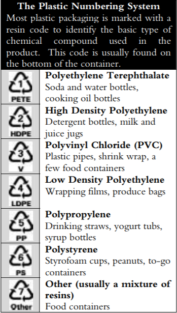

Welcome to our page! If your questions aren't answered in our FAQs, please email us here
FAQ
What are the different types of plastic and what do they mean?
Here is a helpful chart!:

How can I find my nearest recycling center?
You can look at our directory page to find what can be recycled in your area, you can also use single-stream curbside for an easier recycling
What can I do with all the non recycle objects I have?
You can take all your non-recyclables and try to reuse them or throw them in the trash. Always remember to use less nonrecyclables!
Why can I not recycle certain plastics?
plastics with a higher number (5-7) are made of a worse material and is more expensive for recycling centers to process it.
Why should I recycle?
Recycling is a good practice to take because it helps the environment and lessens the Earth's wastes.